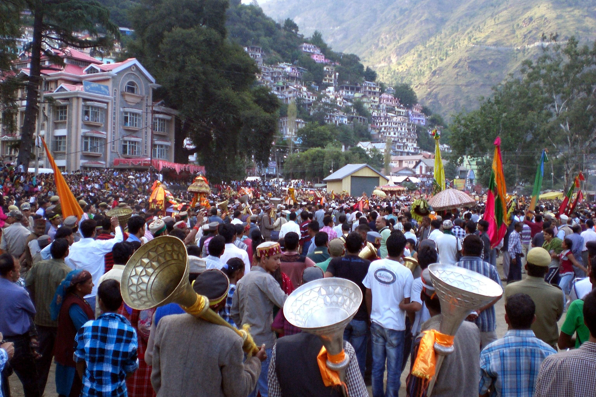
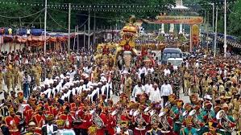
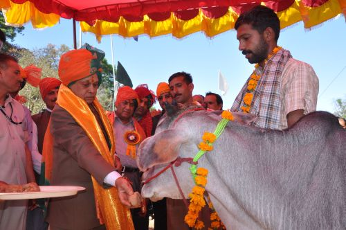
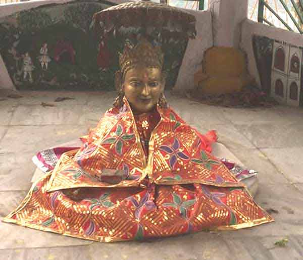
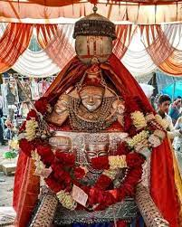
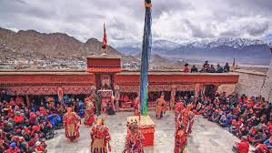

Kullu Dussehra
Kullu Dussehra is the renowned International Mega Dussehra festival observed in the month of October in Himachal Pradesh state in northern India. Wherein more than 4-5 lakh people visit the fair from all across the Globe

Mandi Shivratri
Mandi Maha Shivaratri Fair is an annual renowned international fair that is held for 7 days starting with the Hindu festival of Shivaratri, in the Mandi town of the Indian state of Himachal Pradesh.

Minjar Fair Chamba
Minjar Mela is celebrated in the Chamba valley of Himachal Pradesh, as a commemoration of the victory of the Raja of Chamba over the ruler of Trigarta (now known as Kangra), in 935 AD. It is said that on the return of their victorious king, people greeted him with sherfs of paddy and maize, as gift to symbolize prosperity and happiness.

Nalwar Fair
Nalwar Mela is celebrated from 22nd March to 28th March of every year. The idea was motivated by a shortage of the good breed cattle, especially bullocks, which are so important for agriculture and are a prominent feature of the economy of the hilly terrain. In this Nalwar Mela cattles are purchased and sold on a large number.

Deotsidh Fair
Beginning on 14 March, which is in the Hindu month of Chaitra, an annual fair is organised at Deotsidh and attracts thousands of devotees from all over India and abroad. The fair commemorates Baba Balak Nath, an incarnation of Lord Shiva in Kali Yuga.

Sui Mela Chamba
Every year, from the 15th of March to the 1st of April, the Sui Mata Temple becomes a hub of vibrant activity as a fair takes place in honour of Queen Sunaina's sacrifice. Rani Sunaina's palanquin is taken from the regal residence to the temple for the fair.

Mahu Nag Fair Karsog Mandi
It is believed that Lord Mahunag appeared inside the jail cell and helped him get out of the jail. To express his gratitude towards Mahunag Ji, he organized a ceremony. The ceremony is still conducted today in the form of Mool Mahunag Annual fair of Karsog every year.

Ladarcha Fair Kaza
Previously, this fair used to be celebrated in Kibbar maidan in Spit in the month of July where traders from Ladakh, Rampur Busher and Spiti meet in this fair to barter their produce. Due to closure of Tibetan traders, this fair is now being celebrated at Kaza, the headquarters of Spiti Sub Division in the 3rd week of August. A large number of visitors and traders from Kullu/ Lahaul/ Kinnaur meet there. It has now become a conference of cultures of Spiti, Ladakh & Kinnaur as also of the Indian plains.